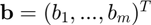
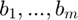
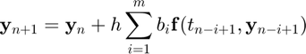

AB_coefficients
Coefficients for the mth-order Adams-Bashforth predictor.
Back to IVP Solver Toolbox Contents.
Contents
Syntax
[num,gcd] = AB_coefficients(m)
AB_coefficients(m,'print')
Description
[num,gcd] = AB_coefficients(m) returns a vector of numerators, num, and the greatest common denominator, gcd, of the vector  storing the coefficients of the mth-order Adams-Bashforth predictor.
AB_coefficients(m,'print') prints the coefficients  of the mth-order Adams-Bashforth predictor to the Command Window.
Input/Output Parameters
| Variable | Symbol | Description | Format | |
| Input | m | order of Adams-Bashforth predictor | 1×1 double |
|
| - | (OPTIONAL) specify as 'print' if you want to print the coefficients to the command window | char | ||
| Output | num | - | vector storing the numerators of |
n×1 double |
| gcd | - | greatest common denimonator of |
1×1 double |
NOTE: This function assumes the mth-order Adams-Bashforth predictor is written as

Example #1
Return the numerators and denominators of the coefficients of the 3rd-order Adams-Bashforth predictor.
AB_coefficients returns two quantities; num stores the numerators of the coefficients, while gcd stores the greatest common divisor of the coefficients. The numerators in num are already scaled to be used with gcd.
[num,gcd] = AB_coefficients(3)
num =
23
-16
5
gcd =
12
Example #2
Print the coefficients of the 3rd-order Adams-Bashforth predictor.
AB_coefficients(3,'print');
3th-order Adams-Bashforth predictor coefficients: b(1) = 23/12 b(2) = -16/12 b(3) = 5/12
See also
AM_coefficients | AB_predictor | AM_corrector | ABM_equations